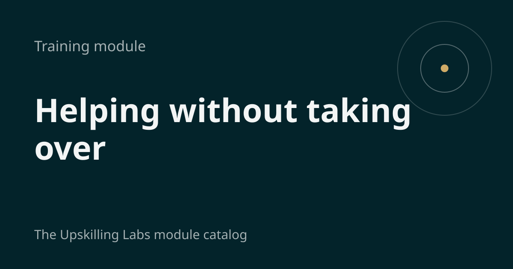

Not yet reviewed. Nobody has checked this learning material yet, so treat it as a draft.
About this module
The module's metadata, from the front matter of modules/helping-without-taking-over.md.
- Learning outcome
- When someone is stuck, ask what they tried and what they expect, give them time, and step in only with the smallest hint.
- Kind
- Training module, for the people who deliver it
- Output
- Training, no required output. No required output. You leave with three questions to ask before you give an answer.
- Stage
- Prep before a Cycle, During a Cycle
- Scale
- 1:few
- Delivered by
- An experienced mentor
- Looking after it now
- a mentor, an organizer
- Reviewed by
- Not yet
- Timing
- Before an attempt
- Learner stage
- involved
- How support fades
- Practised in pairs with role-play, then used for real with a short log afterward.
- Maps to
- Coaching, productive struggle
- Time
- 40 minutes
- Prerequisites
- None
- Scope
- General
- Tags
- helping, facilitation
- Status
- draft
- Optional
- Yes, like every module in the catalog
- A private way in
- The role-play is in pairs. Nobody performs in front of the group.
- A way out
- If the person you're helping is getting upset rather than thinking, it's fine to give the answer and explain it.
Made-up example for the prototype, formed from a made-up situation log. Not reviewed.
Overview
When teachers probed and gave time, struggle stayed productive. Telling the answer or directing step by step lowered the thinking (Hiebert and Grouws; Warshauer, issue #4, from middle-school math). Learners also differ in how much direction they want (Grow, issue #10). Both are evidence by analogy for adults at the Labs, to test.
Exercises
- With others: in pairs, one person plays someone stuck on a deployment. The other may only ask questions for five minutes.
- Alone: write the three questions you'll ask before giving an answer.
- After your next real session: log the situation in a few lines (the problem, what worked).
For facilitators
Model it: when someone in the session asks you a question, ask them one back first. Name the moment when giving the answer is the right call.
Resources
- Issues #4 and #10 in the Scaffolding repo
Formed from
The situation logs this module grew from: what the problem was and what worked.
The problem. I fixed a participant's deployment myself because it was faster. The next week they hit the same error and messaged me again.
What worked. The second time, I asked what the error said and what they'd tried, and waited. They found it in about ten minutes. It took longer, but they haven't asked since.
The problem. GitHub was new to me ("what is that?"). Before the hackathon, a mentor set it up for me in person: "I kind of just had [him] just do it for me." When my team formed, I didn't know how to set it up for the team.
What worked. The team met with the same mentor to get GitHub running as a team. I went back to him more than once ("I was a little bit repetitive").